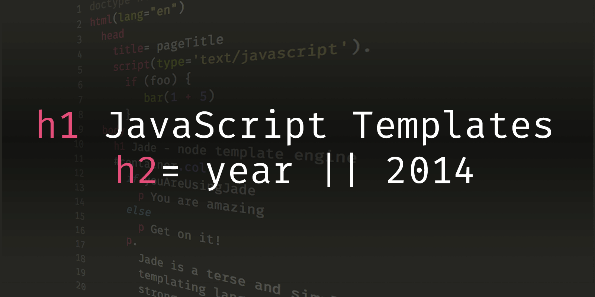
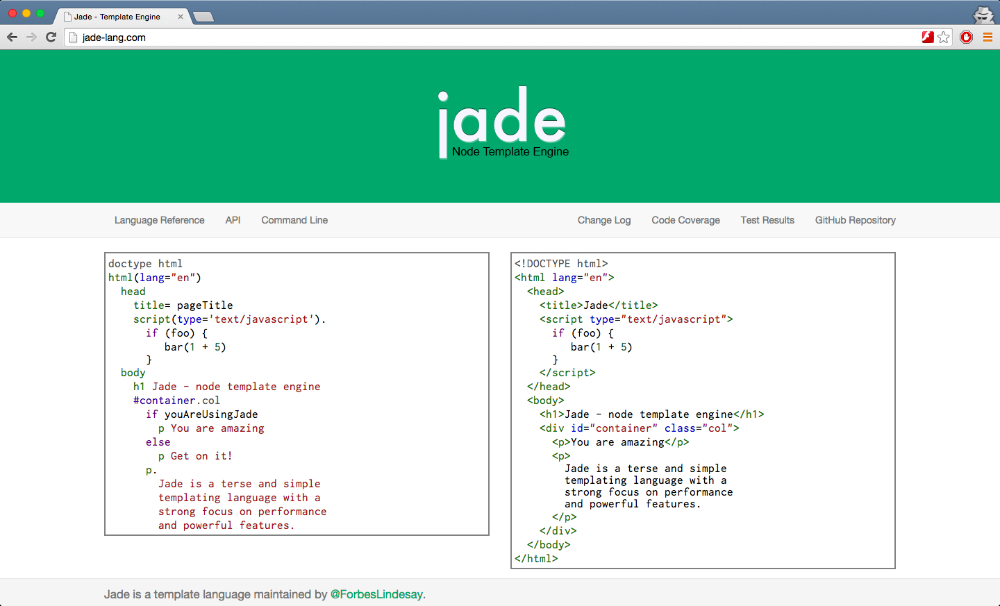
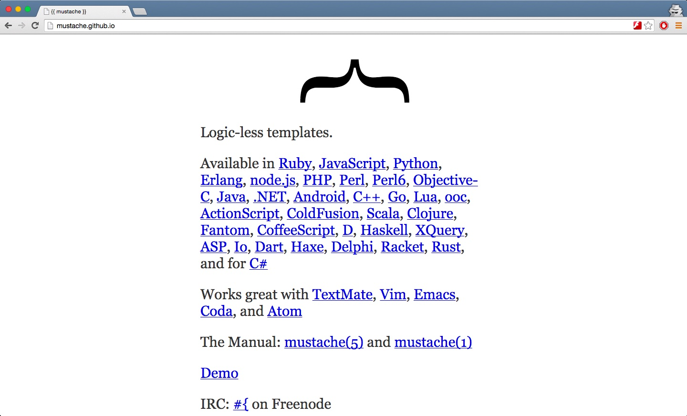
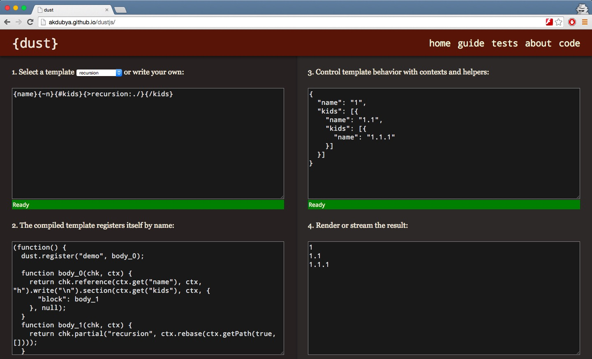
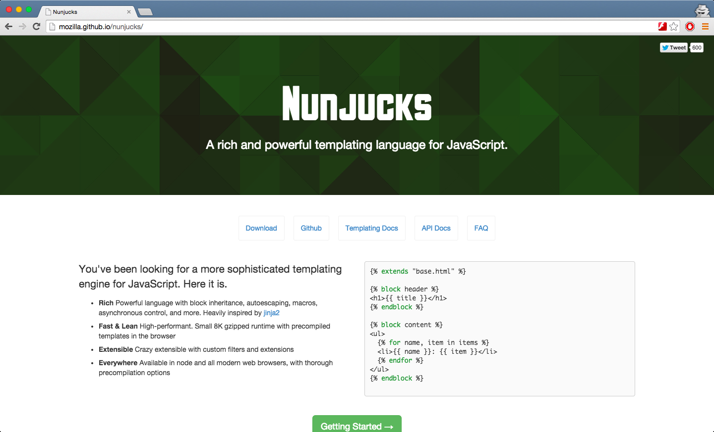
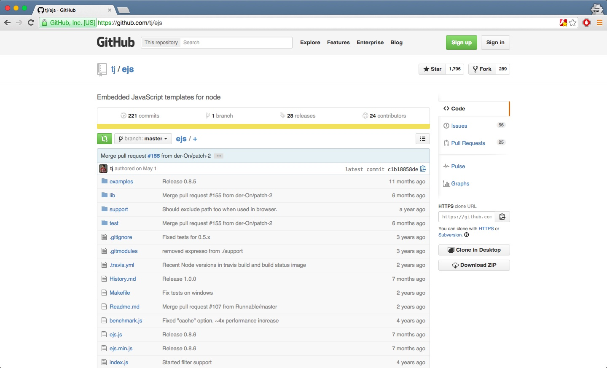
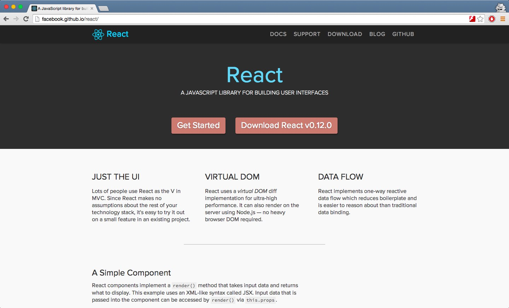
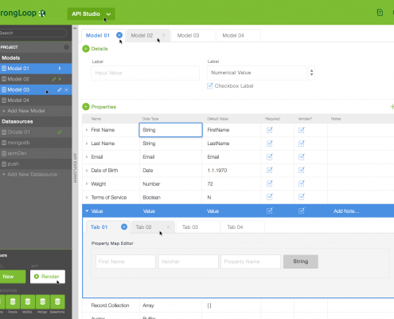

By {{fullName author}}
{{body}}
Comments
{{#each comments}}By {{fullName author}}
{{body}}
{{/each}}

Lets talk templates, specifically JavaScript powered templates. Even more specifically – template engines that work as well on the server side as they do on the client side. After all, this is the great promise and advantage that isomorphic JavaScript brings to the table – ability to run the same code everywhere.
The big benefit of such approach when it comes to templates specifically is being able to render HTML on the server side, send it over the wire to a client and then have that client interact with the page and have it change using the same template bits and maybe even some shared logic. That can be a huge gain in terms of effort and reduces footprint of your application.
In this article I want to look at some of the most popular JavaScript templating engines. It’s not my intent to compare them or do some silly benchmarking. I don’t think subjectively evaluating a bunch of templating engines and picking the one I like best is helpful in any way. Most of the engines bring something unique to the table and my idea of DRY might not necessarily match yours.
Having said that, the template engines in this articles were selected based on a simple “GitHub score”. How was that determined you might ask? I’ve come up with a simple formula:
1
stars + forks + commits + contributors * 10 = github_score
Finally, the last criteria for selection is project activity in general. I decided not to work that into the formula to keep things simple. There are a few engines that were excluded based on the lack of any activity over an extensive amount of time such as Eco and Haml.js. These could be considered abandoned in my opinion. EJS and Mustache.js get a break here because they are fairly simple and there aren’t any new features in general.
With that in mind, I’m going to give a brief sample of what markup looks like for each engine, the minimum code necessary to render that markup to HTML followed by some pros and cons.
Please note, everything in this article represents my personal opinion and might not match yours. The purpose here is to show you different templating languages, give you my personal take on each and let your decide for yourself.
JavaScript Template Engines 2014
NAME STARS FORKS COMMITS CONTRIBUTORS GITHUB SCORE
Jade 7,335 1,136 1,968 135 118
Mustache.js 6,985 1,464 514 55 95
Dust.js 1,571 293 697 28 28
Nunjucks 1,565 115 525 40 26
EJS 1,796 289 221 24 25
Jade

jade
1
npm install jade
Jade is a high performance template engine heavily influenced by Haml and implemented with JavaScript for Node.
1
2
3
4
5
6
7
8
9
10
11
12
13
14
15
16
doctype html
html(lang="en")
head
title= pageTitle
script(type='text/javascript').
if (foo) bar(1 + 5)
body
h1 Jade - node template engine
#container.col
if youAreUsingJade
p You are amazing
else
p Get on it!
p.
Jade is a terse and simple templating language with a
strong focus on performance and powerful features.
1
2
3
var jade = require('jade');
var template = jade.compile('string of jade', options);
var result = template(locals);
Pros
No closing tags
White space significant indentation
Extensive layout inheritance
Macros support
Plain old school includes
Built in support for Markdown, CoffeeScript and others
Available implementations in php, scala, ruby, python and java.
Cons
Not everyone likes significant white space
JavaScript inlining can get cumbersome for more than one line
Requires a small runtime to use precompiled templates on the client
Not suitable for non-HTML output
No streaming support
Somewhat high learning curve
Tools
grunt-jade
gulp-jade
Jade for Atom
Jade for Coda
Jade for Emacs
Jade for Sublime
Jade for TextMate
Jade for Vim
Summary
Jade takes Haml DRYness to the next level and gets rid of leading % character but otherwise it’s pretty much on par feature wise. Jade ended up at the top of the list based on the numbers. I liked that there’s no need to worry about closing tags and significant white space enforces clear coding convention between team members. Jade allows for full JavaScript expressions but makes that just awkward enough to discourage full blown logic in the views. It’s support for inlined Markdown and CoffeeScript is a nice addition. Ability to use Markdown for larger blocks of text makes formatting a pleasure.
Mustache.js

mustache
1
npm install mustache
Mustache.js is an implementation of the Mustache template system in JavaScript.
Mustache is a logic-less template syntax. It can be used for HTML, config files, source code – anything. It works by expanding tags in a template using values provided in a hash or object.
We call it “logic-less” because there are no if statements, else clauses, or for loops. Instead there are only tags. Some tags are replaced with a value, some nothing, and others a series of values.
1
2
3
4
5
6
7
8
9
10
11
By {{fullName author}}
{{body}}
Comments
{{#each comments}}
By {{fullName author}}
{{body}}
{{/each}}
1
2
3
var mustache = require('mustache');
var template = mustache.compile('string of mustache');
var result = template(locals);
Pros
Based on the popular Mustache templating language
Operating on plain HTML, no significant white space
Clean, concise variable and loop controls syntax
Could be used for things other than HTML, eg config files, JSON
Small learning curve
Available implementations in .NET, ActionScript, Android, ASP, C#. C++, Clojure, CoffeeScript, ColdFusion, D, Dart, Delphi, Erlang, Fantom, Go, Haskell, Haxe, Io, Java, JavaScript, Lua, node.js, Objective-C, ooc, Perl6, Perl, PHP, Python, Racket, Ruby, Rust, Scala and XQuery.
Cons
Cumbersom partials system requires to register all partials
Default global namespace for partials will require workaround to avoid collisions
No built-in layout system
Have to close your own tags (right?)
No streaming support
Implementations
There are a few other Mustache implementations that stand out and are worth noting:
Handlebars.js adds a couple of additional features to make writing templates easier and also changes a tiny detail of how partials work.
Hogan.js was written by the good folks at Twitter to meet three templating library requirements: good performance, standalone template objects, and a parser API.
Tools
grunt-mustache
gulp-mustache
Mustache for Atom
Mustache for Coda
Mustache for Emacs
Mustache for TextMate
Mustache for Vim
Summary
I don’t think it’s a valid statement to claim that language doesn’t have control structures just because the syntax looks a little different but does essentially the same thing. No sufficiently complex template can get away without using basic ifs & loops and making the loud statement of being “logic-less” is unnecessary and silly in my opinion. Having said that Mustache is a very popular templating language which is evident from its many platform implementations. It has very little learning curve and can be used for things other than HTML.
Dust.js

dust
1
npm install dustjs-linkedin
Dust.js is a heavily influenced by Mustache template language. The original Dust.js repository has been pretty much abandoned but the LinkedIn fork that is listed here is alive and pretty active.
1
2
3
4
5
6
7
8
9
10
11
12
13
14
15
16
17
{! First, insert the base template as a partial !}
{>"shared/base_template"/}
{! Then populate the base template named blocks. Supply the desired bodyContent and pageFooter !}
{These are your current settings:
- xxxx
- yyy
{/bodyContent}
{
About Us |
Contact Us
{/pageFooter}
1
2
3
var dust = require('dustjs-linkedin');
var compiled = dust.compile('string of dust', 'intro');
dust.render('intro', locals, function(err, result) { ... });
Pros
Async & streaming support
Operating on plain HTML, no significant white space
Clean, concise variable and loop controls syntax
Could be used for things other than HTML, eg config files, JSON
Doesn’t pretend to be logic-less
Filters support
Cons
Can’t automatically load partials
Default global namespace for partials will require workaround to avoid collisions
Have to close your own tags (right?)
Preloading and naming templates for rendering feels strange
Somewhat high learning curve, especially if you want to get into streaming
Tools
grunt-dust
gulp-dust
Dust.js for Atom
Dust.js for Sublime
Dust.js for TextMate
Dust.js for Vim
Summary
The streaming support in Dust.js is unique. The runnable example takes advantage of this to illustrate how HTML could be streamed to the user. You can stream response by itself and you can stream chunks. You can imagine a case where you render a list of promises resolving them as they are rendered and only resolving those that are rendered. Be sure to read the original documentation because the LinkedIn fork while having a great guide misses on some key points.
Nunjucks

nunjucks
1
npm install nunjucks
Rich Powerful language with block inheritance, autoescaping, macros, asynchronous control, and more. Heavily inspired by jinja2.
1
2
3
4
5
6
7
8
9
10
11
12
13
{% extends "base.html" %}
{% block header %}
{{ title }}
{% endblock %}
{% block content %}
{% for name, item in items %}
- {{ name }}: {{ item }}
{% endfor %}
{% endblock %}
1
2
3
var nunjucks = require('nunjucks');
var template = nunjucks.compile('string of nunjucks');
var result = template.render(locals);
Pros
Async support
Extensive layout inheritance
Macros support
Plain old school includes
Filters support
White space control
Operating on plain HTML, no significant white space
Clean, concise variable and loop controls syntax
Could be used for things other than HTML, eg config files, JSON
Custom tags support
Cons
Have to close your own tags (right?)
No streaming support
Somewhat high learning curve
Tools
gulp-nunjucks
grunt-nunjucks
Nunjucks for Atom
Nunjucks for Sublime
Nunjucks for TextMate
Nunjucks for Vim
Summary
Nunjucks has the weight of Mozilla behind it and a very extensive documentation. Unlike Dust.js where async support is baked in as a byproduct of the streaming, Nunjucks has a full support for async filters and tags. Your filters could be making database queries and performing other async operations during rendering, which could be pretty powerful when done right.
… custom filters and extensions can do stuff like fetch things from the database, and template rendering is “paused” until the callback is called.
EJS

ejs
1
npm install ejs
Embedded JavaScript templates for node
1
2
3
4
5
6
7
8
9
Users
<% function user(user) { %>
<%= user.name %> is a <%= user.age %> year old <%= user.species %>.
<% } %>
<% users.map(user) %>
1
2
var ejs = require('ejs');
var result = ejs.render('string of ejs', locals);
Pros
Operating on plain HTML, no significant white space8 Basically writing JavaScript, few restrictions here
Could be used for things other than HTML, eg config files, JSON
Filters support
No learning curve
Cons
No async support
Very verbose, PHP-like syntax
Includes are loaded from local file system (not even sure how client side is handled in this case)
Tools
gulp-ejs-precompiler
EJS for Atom
EJS for Sublime
EJS for Vim
Summary
EJS is probably the most old school way of writing templates. Takes me back to the days of PHP and JSP. It’s very verbose and having to close your functions and if statements with <% } %> type of blocks makes the code difficult to read and even more difficult to type. EJS is hands down my least favorite templating language. It can however have its uses because in the bare minimum implementation it’s just about 25 lines long.
One more thing…

react
There’s one other project that I haven’t mentioned that I feel is worth noting – React by Facebook. I don’t feel it completely belongs on this list because it’s so much more than a templating engine. However, because it can actually be used as an isomorphic rendering engine, it’s worth noting. It’s currently very actively developed and there’s a ton of buzz around it.
Summary
NAME STARS FORKS COMMITS CONTRIBUTORS GITHUB SCORE
Jade 7,335 1,136 1,968 135 118
Mustache.js 6,985 1,464 514 55 95
Dust.js 1,571 293 697 28 28
Nunjucks 1,565 115 525 40 26
EJS 1,796 289 221 24 25
So what do we have? Five different isomorphic template engines written in JavaScript that take completely different approach to essentially doing the same thing – rendering HTML. From the most basic EJS, a very popular Mustache.js, LinkedIn backed Dust.js, Mozilla produced Nunjucks and a fully independent and most popular of the bunch – Jade.
All of them have their own strengths and weaknesses, some of them could even be used together with others. Dust.js stands out of the crowd with its streaming support. Jade has significant white space and can seamlessly integrate with other markup engines like Markdown and CoffeeScript. Nunjucks brings async filters and tags to the table and Mustache.js is minimal and straight forward. EJS is just… well, EJS I guess – it’s a bare bones templating engine.
Finally, I’ve put together a runnable example. Every engine listed is set to produce exactly the same output to give you and idea of where they differ. Dust.js is slowed down on purpose to illustrate it’s streaming capabilities. The source is also posted on GitHub.
StrongLoop is Hiring!
Love helping developers become successful with Node.js in developing APIs? Join our team!
Senior Technical Support Engineer
Solutions Architect
Developer Evangelist
Node.js and API Training
We are excited to have partnered with BestBuy, Vizuri, Galvanize and Applause to bring our two-day “Node.js Fundamentals and API Development” training to Minneapolis, Washington DC, and Framingham, MA this Fall and Winter. If you are in these cities and have been looking to get in-depth, hands-on training from Node.js experts before the end of the year, you need to check out these events. Early-bird tickets start at $250 for two days of training, making it an epic value! Questions? Drop us a line at callback@strongloop.com.
Nov 13-14: Herndon, VA at Vizuri – SOLD OUT
Dec 3-4: Framingham, MA at Applause – Early Bird Ends Soon!
Dec 11-12: Minneapolis, MN at BestBuy
Read more…
Develop APIs Visually with StrongLoop Studio
StrongLoop Studio (currently in Beta) is a visual tool for creating and managing Node.js powered REST APIs. It also includes tools for visualizing CPU profiling and Heap dump metrics. Includes support for Oracle, SQL Server, MongoDB, MySQL and PostgreSQL. Visit the StrongLoop Studio Beta page for links on how to sign up, get the code,videos, documentation and where to file bugs. 2048x1536xProperties_Full.png.pagespeed.ic.ciMbyLvXLO (1)

What’s next?
What’s in the upcoming Node v0.12 release? Big performance optimizations, read Ben Noordhuis’ blog to learn more.
Ready to develop APIs in Node.js and get them connected to your data? Check out the Node.js LoopBack framework. We’ve made it easy to get started either locally or on your favorite cloud, with a simple npm install.
Need training and certification for Node? Learn more about both the private and open options StrongLoop offers.